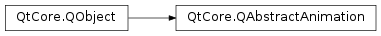

QAbstractAnimation¶
Inherited by: QVariantAnimation, QPropertyAnimation, QAnimationGroup, QSequentialAnimationGroup, QParallelAnimationGroup, QPauseAnimation
Note
This class was introduced in Qt 4.6.
Synopsis¶
Functions¶
- def
currentLoop() - def
currentLoopTime() - def
currentTime() - def
direction() - def
group() - def
loopCount() - def
setDirection(direction) - def
setLoopCount(loopCount) - def
state() - def
totalDuration()
Virtual functions¶
- def
duration() - def
updateCurrentTime(currentTime) - def
updateDirection(direction) - def
updateState(newState, oldState)
Slots¶
Signals¶
- def
currentLoopChanged(currentLoop) - def
directionChanged(arg__1) - def
finished() - def
stateChanged(newState, oldState)
Detailed Description¶
The
PySide2.QtCore.QAbstractAnimationclass is the base of all animations.The class defines the functions for the functionality shared by all animations. By inheriting this class, you can create custom animations that plug into the rest of the animation framework.
The progress of an animation is given by its current time (
PySide2.QtCore.QAbstractAnimation.currentLoopTime()), which is measured in milliseconds from the start of the animation (0) to its end (PySide2.QtCore.QAbstractAnimation.duration()). The value is updated automatically while the animation is running. It can also be set directly withPySide2.QtCore.QAbstractAnimation.setCurrentTime().At any point an animation is in one of three states:
Running,Stopped, orPaused–as defined by theQAbstractAnimation.Stateenum. The current state can be changed by callingPySide2.QtCore.QAbstractAnimation.start(),PySide2.QtCore.QAbstractAnimation.stop(),PySide2.QtCore.QAbstractAnimation.pause(), orPySide2.QtCore.QAbstractAnimation.resume(). An animation will always reset itscurrent timewhen it is started. If paused, it will continue with the same current time when resumed. When an animation is stopped, it cannot be resumed, but will keep its current time (until started again).PySide2.QtCore.QAbstractAnimationwill emitPySide2.QtCore.QAbstractAnimation.stateChanged()whenever its state changes.An animation can loop any number of times by setting the
PySide2.QtCore.QAbstractAnimation.loopCount()property. When an animation’s current time reaches itsPySide2.QtCore.QAbstractAnimation.duration(), it will reset the current time and keep running. A loop count of 1 (the default value) means that the animation will run one time. Note that a duration of -1 means that the animation will run until stopped; the current time will increase indefinitely. When the current time equalsPySide2.QtCore.QAbstractAnimation.duration()and the animation is in its final loop, theStoppedstate is entered, and thePySide2.QtCore.QAbstractAnimation.finished()signal is emitted.
PySide2.QtCore.QAbstractAnimationprovides pure virtual functions used by subclasses to track the progress of the animation:PySide2.QtCore.QAbstractAnimation.duration()andPySide2.QtCore.QAbstractAnimation.updateCurrentTime(). ThePySide2.QtCore.QAbstractAnimation.duration()function lets you report a duration for the animation (as discussed above). The animation framework callsPySide2.QtCore.QAbstractAnimation.updateCurrentTime()when current time has changed. By reimplementing this function, you can track the animation progress. Note that neither the interval between calls nor the number of calls to this function are defined; though, it will normally be 60 updates per second.By reimplementing
PySide2.QtCore.QAbstractAnimation.updateState(), you can track the animation’s state changes, which is particularly useful for animations that are not driven by time.
-
class
PySide2.QtCore.QAbstractAnimation([parent=nullptr])¶ Parameters: parent – PySide2.QtCore.QObjectConstructs the
PySide2.QtCore.QAbstractAnimationbase class, and passesparenttoPySide2.QtCore.QObject‘s constructor.
-
PySide2.QtCore.QAbstractAnimation.Direction¶ This enum describes the direction of the animation when in
Runningstate.Constant Description QAbstractAnimation.Forward The current time of the animation increases with time (i.e., moves from 0 and towards the end / duration). QAbstractAnimation.Backward The current time of the animation decreases with time (i.e., moves from the end / duration and towards 0).
-
PySide2.QtCore.QAbstractAnimation.State¶ This enum describes the state of the animation.
Constant Description QAbstractAnimation.Stopped The animation is not running. This is the initial state of PySide2.QtCore.QAbstractAnimation, and the statePySide2.QtCore.QAbstractAnimationreenters when finished. The current time remain unchanged until eitherPySide2.QtCore.QAbstractAnimation.setCurrentTime()is called, or the animation is started by callingPySide2.QtCore.QAbstractAnimation.start().QAbstractAnimation.Paused The animation is paused (i.e., temporarily suspended). Calling PySide2.QtCore.QAbstractAnimation.resume()will resume animation activity.QAbstractAnimation.Running The animation is running. While control is in the event loop, PySide2.QtCore.QAbstractAnimationwill update its current time at regular intervals, callingPySide2.QtCore.QAbstractAnimation.updateCurrentTime()when appropriate.
-
PySide2.QtCore.QAbstractAnimation.DeletionPolicy¶ Constant Description QAbstractAnimation.KeepWhenStopped The animation will not be deleted when stopped. QAbstractAnimation.DeleteWhenStopped The animation will be automatically deleted when stopped.
-
PySide2.QtCore.QAbstractAnimation.currentLoop()¶ Return type: PySide2.QtCore.int
-
PySide2.QtCore.QAbstractAnimation.currentLoopChanged(currentLoop)¶ Parameters: currentLoop – PySide2.QtCore.int
-
PySide2.QtCore.QAbstractAnimation.currentLoopTime()¶ Return type: PySide2.QtCore.intReturns the current time inside the current loop. It can go from 0 to
PySide2.QtCore.QAbstractAnimation.duration().
-
PySide2.QtCore.QAbstractAnimation.currentTime()¶ Return type: PySide2.QtCore.int
-
PySide2.QtCore.QAbstractAnimation.direction()¶ Return type: PySide2.QtCore.QAbstractAnimation.Direction
-
PySide2.QtCore.QAbstractAnimation.directionChanged(arg__1)¶ Parameters: arg__1 – PySide2.QtCore.QAbstractAnimation.Direction
-
PySide2.QtCore.QAbstractAnimation.duration()¶ Return type: PySide2.QtCore.intThis pure virtual function returns the duration of the animation, and defines for how long
PySide2.QtCore.QAbstractAnimationshould update the current time. This duration is local, and does not include the loop count.A return value of -1 indicates that the animation has no defined duration; the animation should run forever until stopped. This is useful for animations that are not time driven, or where you cannot easily predict its duration (e.g., event driven audio playback in a game).
If the animation is a parallel
PySide2.QtCore.QAnimationGroup, the duration will be the longest duration of all its animations. If the animation is a sequentialPySide2.QtCore.QAnimationGroup, the duration will be the sum of the duration of all its animations.
-
PySide2.QtCore.QAbstractAnimation.finished()¶
-
PySide2.QtCore.QAbstractAnimation.group()¶ Return type: PySide2.QtCore.QAnimationGroupIf this animation is part of a
PySide2.QtCore.QAnimationGroup, this function returns a pointer to the group; otherwise, it returns 0.See also
-
PySide2.QtCore.QAbstractAnimation.loopCount()¶ Return type: PySide2.QtCore.int
-
PySide2.QtCore.QAbstractAnimation.pause()¶ Pauses the animation. When the animation is paused,
PySide2.QtCore.QAbstractAnimation.state()returns Paused. The value ofPySide2.QtCore.QAbstractAnimation.currentTime()will remain unchanged untilPySide2.QtCore.QAbstractAnimation.resume()orPySide2.QtCore.QAbstractAnimation.start()is called. If you want to continue from the current time, callPySide2.QtCore.QAbstractAnimation.resume().
-
PySide2.QtCore.QAbstractAnimation.resume()¶ Resumes the animation after it was paused. When the animation is resumed, it emits the resumed() and
PySide2.QtCore.QAbstractAnimation.stateChanged()signals. The currenttime is not changed.
-
PySide2.QtCore.QAbstractAnimation.setCurrentTime(msecs)¶ Parameters: msecs – PySide2.QtCore.int
-
PySide2.QtCore.QAbstractAnimation.setDirection(direction)¶ Parameters: direction – PySide2.QtCore.QAbstractAnimation.Direction
-
PySide2.QtCore.QAbstractAnimation.setLoopCount(loopCount)¶ Parameters: loopCount – PySide2.QtCore.int
-
PySide2.QtCore.QAbstractAnimation.setPaused(arg__1)¶ Parameters: arg__1 – PySide2.QtCore.boolIf
pausedis true, the animation is paused. Ifpausedis false, the animation is resumed.
-
PySide2.QtCore.QAbstractAnimation.start([policy=KeepWhenStopped])¶ Parameters: policy – PySide2.QtCore.QAbstractAnimation.DeletionPolicyStarts the animation. The
policyargument says whether or not the animation should be deleted when it’s done. When the animation starts, thePySide2.QtCore.QAbstractAnimation.stateChanged()signal is emitted, andPySide2.QtCore.QAbstractAnimation.state()returns Running. When control reaches the event loop, the animation will run by itself, periodically callingPySide2.QtCore.QAbstractAnimation.updateCurrentTime()as the animation progresses.If the animation is currently stopped or has already reached the end, calling will rewind the animation and start again from the beginning. When the animation reaches the end, the animation will either stop, or if the loop level is more than 1, it will rewind and continue from the beginning.
If the animation is already running, this function does nothing.
-
PySide2.QtCore.QAbstractAnimation.state()¶ Return type: PySide2.QtCore.QAbstractAnimation.State
-
PySide2.QtCore.QAbstractAnimation.stateChanged(newState, oldState)¶ Parameters: - newState –
PySide2.QtCore.QAbstractAnimation.State - oldState –
PySide2.QtCore.QAbstractAnimation.State
- newState –
-
PySide2.QtCore.QAbstractAnimation.stop()¶ Stops the animation. When the animation is stopped, it emits the
PySide2.QtCore.QAbstractAnimation.stateChanged()signal, andPySide2.QtCore.QAbstractAnimation.state()returns Stopped. The current time is not changed.If the animation stops by itself after reaching the end (i.e.,
PySide2.QtCore.QAbstractAnimation.currentLoopTime()==PySide2.QtCore.QAbstractAnimation.duration()andPySide2.QtCore.QAbstractAnimation.currentLoop()>PySide2.QtCore.QAbstractAnimation.loopCount()- 1), thePySide2.QtCore.QAbstractAnimation.finished()signal is emitted.
-
PySide2.QtCore.QAbstractAnimation.totalDuration()¶ Return type: PySide2.QtCore.intReturns the total and effective duration of the animation, including the loop count.
-
PySide2.QtCore.QAbstractAnimation.updateCurrentTime(currentTime)¶ Parameters: currentTime – PySide2.QtCore.intThis pure virtual function is called every time the animation’s
currentTimechanges.
-
PySide2.QtCore.QAbstractAnimation.updateDirection(direction)¶ Parameters: direction – PySide2.QtCore.QAbstractAnimation.DirectionThis virtual function is called by
PySide2.QtCore.QAbstractAnimationwhen the direction of the animation is changed. Thedirectionargument is the new direction.
-
PySide2.QtCore.QAbstractAnimation.updateState(newState, oldState)¶ Parameters: - newState –
PySide2.QtCore.QAbstractAnimation.State - oldState –
PySide2.QtCore.QAbstractAnimation.State
This virtual function is called by
PySide2.QtCore.QAbstractAnimationwhen the state of the animation is changed fromoldStatetonewState.- newState –
© 2018 The Qt Company Ltd. Documentation contributions included herein are the copyrights of their respective owners. The documentation provided herein is licensed under the terms of the GNU Free Documentation License version 1.3 as published by the Free Software Foundation. Qt and respective logos are trademarks of The Qt Company Ltd. in Finland and/or other countries worldwide. All other trademarks are property of their respective owners.